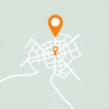
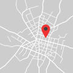

12 profesionales disponibles
Plomeros en San Lorenzo
Filtrar por: Distancia
Distancia
4.7
(203 reviews)
David Martinez
Técnico en plomería y servicio de emergencia. Especialista en
reparar tuberías, destapar cañerías e instalar accesorios. 15 años
de experiencia con trabajos serios
3.1 km de distancia
Disponible mañana
Contactar
Ver perfil
4.9
(98 reviews)
Miguel Santos
Plomero matriculado, especialista en refacción de baños e
instalación de termotanques.
Trabajo con garantía, seguro y toda la documentación en regla
Trabajo con garantía, seguro y toda la documentación en regla
2.3 km de distancia
Disponible hoy

Contactar
Ver perfil
4.8
(150 reviews)
Carlos Rodriguez
Especialista en fugas con más de 10 años de experiencia en
plomería residencial y comercial. Disponible 24/7 para emergencias
1.5 km de distancia
Respuesta rápida (menos de 1 hora)

Contactar
Ver perfil